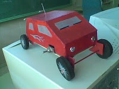
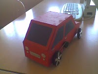
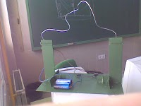
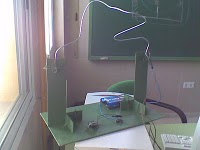
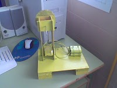
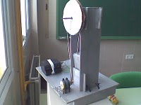
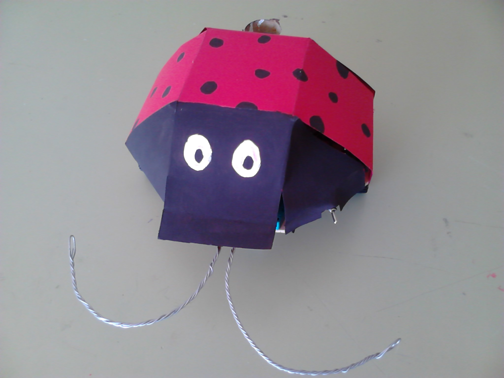
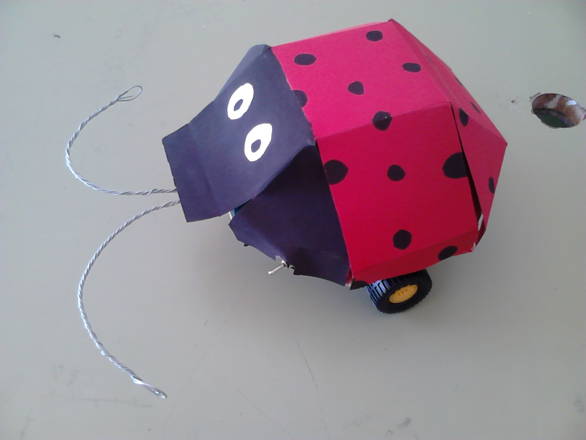

ELECTRICIDAD
PROYECTO COCHE ELÉCTRICO
El proyecto consiste en el diseño construcción de un coche con cartón o madera de marquetería, para el motor se utilizará uno de corriente continua de 4, 5 V, las ruedas pueden ser fabricadas con latas de conserva y el sistema de trasmisión vendrá dado por barras de pinchos y por gomillas elásticas.
 
DETECTOR DE PULSO.
El proyecto consiste en el diseño construcción de un circuito eléctrico formado principalmente por una pila de petaca y un zumbador, sobre una estructura de madera. Fundamentos del proyecto o juego:
* El juego consiste en desplazar el trozo de alambre en forma aguja que ha sido ensartada por un alambre grueso doblado, desde un extremo a otro sin llegar a tocarlo.
* Superar la prueba o ganar el juego supone un gran pulso, ya que el alambre presenta cambios bruscos de dirección.
* El contacto de la aguja con el alambre supone la eliminación o pérdida del juego, ya que cierra el circuito, llega corriente al zumbador y este suena.
 
EL ASCENSOR DE MADERA.
La propuesta de trabajo consiste en el diseño y construcción de un ascensor basado en un circuito eléctrico sobre una estructura de madera y asociado a una polea y su eje, que permiten el ascenso y descenso de una cabina de cartón dentro de una torre de marquetería.
 
PROYECTO PEGATORTAS
El proyecto consiste en la construcción de un robot con dos finales de carrera, dos motores y una rueda loca, que cuando con sus antenas toca la pared cambia el sentido de giro de sus motores, cambiando también de dirección y esquivándola.
 
SEMÁFORO
Este proyecto consiste en construir un semáforo con madera y otros materiales como cartón. El proyecto va a ser medio guiado con los planos de una estructura base y el resto ha de ser diseñado y construido por los alumnos.
FAROLA
Este proyecto consiste en construir una farola que se encienda automáticamente con una ldr cuando se oscurezca con madera y otra parte programada con arduino. El proyecto va a ser medio guiado con los planos de una estructura base y el resto ha de ser diseñado y construido por los alumnos.